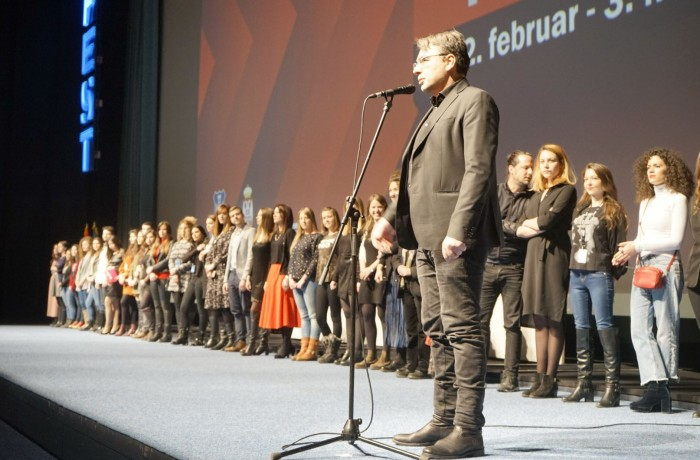

418 screenings were held, out of which 116 premieres in 12 halls all across town.
The last screening of the festival was the movie "Face" by Polish director Malgorzata Szumowska, and since the festival award ceremonies were held during the last two festival nights, instead of the closing ceremony, the art director Jugoslav Pantelić spoke to the audience before the screening of the movie "I, Tonya" in Sava centar.
He pointed out that 418 screenings were held in the last ten days, out of which 116 premieres, in 12 halls across the city, as well that over 70 guests visited the festival. Pantelić then decided to salute all those that are responsible for what FEST is today.
"Usually we salute stars, guests, jury members night after night, but now I'm asking you to salute the group of people withoth who there would be no FEST", Pantelić said, and then asked the FEST crew to join him on the stage. The audience saluted the crew that worked on the festival with an applause.
"Thank you colleagues, thank you Belgrade for being together for the 46. time and for, hopefully, being even better in the years to come. We're already scheduling a meeting for the next year, the next 47. FEST will be held from 22. february to 3. march 2019", Pantelić added. He then reminsced the famous Vlada Divljan, who left us three years ago, adding that his song "Samo jednu ljubav imam" could be dedication of this night for all of us that love film.